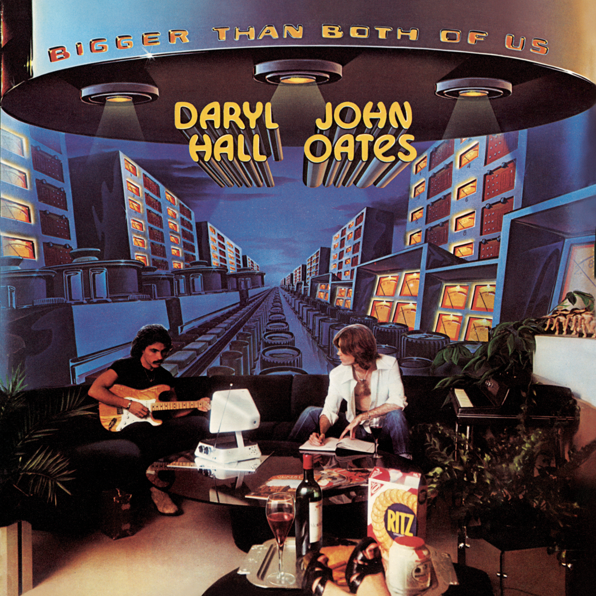

Day 101

Daryl Hall & John Oates ◆ Rich Girl ◆ Bigger Than Both of Us ◆ 1976
也是 Spotify 上听到的。这首歌的背景故事挺有趣：
“Rich Girl” was written about an old boyfriend of Sara’s [Allen] from college that she was still friends with at the time. His name is Victor Walker. He came to our apartment, and he was acting sort of strange. His father was quite rich. I think he was involved with some kind of a fast-food chain. I said, “This guy is out of his mind, but he doesn’t have to worry about it because his father’s gonna bail him out of any problems he gets in.” So I sat down and wrote that chorus. [Sings] “He can rely on the old man’s money/he can rely on the old man’s money/he’s a rich guy.” I thought that didn’t sound right, so I changed it to “Rich Girl.” He knows the song was written about him. (HALL AND OATES: Soul Survivors, Ken Sharp, 2009)
我本来以为是像 Like a Rolling Stone 一样讲富家千金的。
另外，请欣赏 K.K. Slider 带来的翻唱：K.K. Rich Girl。我是看到这首翻唱想起来要写 Lake Shore Drive 和这首歌的www
You’re a rich girl, and you’ve gone too far
’Cause you know it don’t matter anyway
You can rely on the old man’s money
You can rely on the old man’s money
It’s a bitch girl but it’s gone too far
’Cause you know it don’t matter anyway
Say money but it won’t get you too far
Get you too far
Don’t you know, don’t you know
That it’s wrong to take what is given you
So far gone, on your own
You can get along if you try to be strong
But you’ll never be strong ’cause
You’re a rich girl, and you’ve gone too far
’Cause you know it don’t matter anyway
You can rely on the old man’s money
You can rely on the old man’s money
It’s a bitch girl and it’s gone too far
’Cause you know it don’t matter anyway
Say money but it won’t get you too far
Get you too far
High and dry, out of the rain
It’s so easy to hurt others when you can’t feel pain
And don’t you know that a love can’t grow
’Cause there’s too much to give, ’cause you’d rather live
For the thrill of it all, oh
You’re a rich girl, and you’ve gone too far
’Cause you know it don’t matter anyway
You can rely on the old man’s money
You can rely on the old man’s money
It’s a bitch girl and it’s gone too far
’Cause you know it don’t matter anyway
Say money but it won’t get you too far
Say money but it won’t get you too far
Say money but it won’t get you too far
Get you too far
And you say
You can rely on the old man’s money
You can rely on the old man’s money
You’re a rich girl, a rich girl
Oh, you’re a rich, rich girl yeah
Say money but it won’t get you too far
Oh, get ya too far
Source: AZ Lyrics